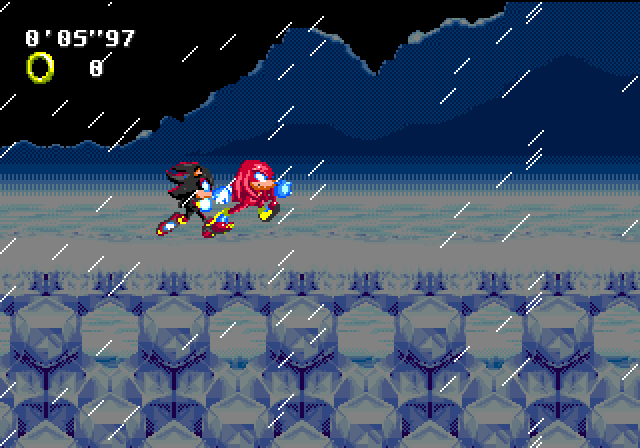
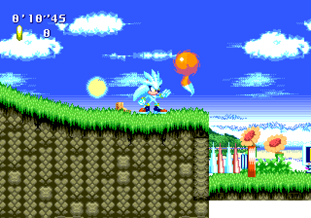

Sonic Next Genesis is a ROM hack of Sonic the Hedgehog that I started in 2014 and abandoned in 2022. It was originally a 2D remake of Sonic the Hedgehog (2006), but in 2018 I decided that I wanted to take it in a totally original direction. The game mainly consists of a mashup of assets from other games which I tried using to create original levels. In its current state, it's a series of in-progress test objects.
Development of the project slowed down after 2018 when I began using my free time writing music. It then reimerged in 2020 when I gained a newfound love for programming. In 2021, however, I branched out into working on collaborate projects which gave me little time to work on this project. Aside from experimenting with graphical effects in 2022, no significant progress had been made since then, and I abandoned the project officially in 2023.
This project ended up mainly being a playground for experimenting with gameplay ideas and learning how to work with the Sega Genesis hardware. In retrospect, a lot of decisions I made regarding this hack were bad, but it served as a valuable learning experience. I doubt I would be where I am now without it.
Downloads:
Latest Build
SHC 2016 Demo
SHC 2015 Demo
Development Files:
Source
Pre-Git Backups
Design Doc
Cutscene Plans
Assets
Related Pages
SSRG Thread